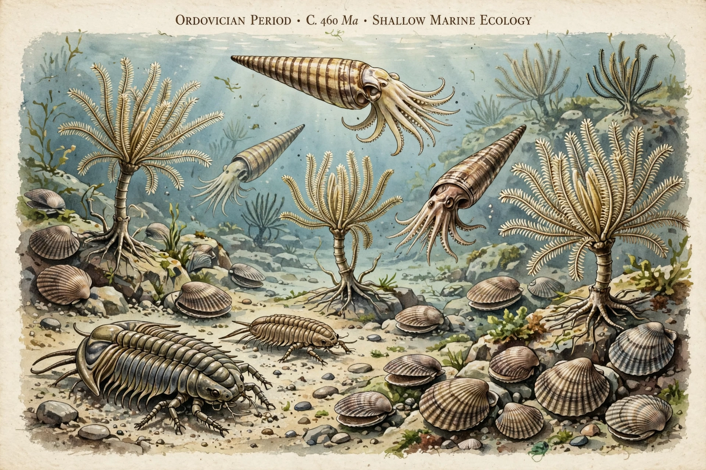

The Ordovician is a geologic period and system, the second of six periods of the Paleozoic Era, spanning 41.6 million years from about 485.4 million years ago (Ma) to 443.8 Ma. It follows the Cambrian and is followed by the Silurian. Named by Charles Lapworth in 1879 after the Welsh tribe the Ordovices, it resolved a dispute between followers of Adam Sedgwick and Roderick Murchison.

| Chronology | 485.4 – 443.8 Ma |
|---|---|
| Preceded by | Cambrian |
| Followed by | Silurian |
| Etymology | Ordovices (Welsh tribe) |
It is divided into Lower (Tremadocian, Floian), Middle (Dapingian, Darriwilian) and Upper (Sandbian, Katian, Hirnantian) series.
The Great Ordovician Biodiversification Event greatly increased marine diversity. Trilobites, brachiopods, bryozoans, corals, crinoids and jawless fish flourished; graptolites were common plankton. The first evidence of land plants appears as spores. Arthropods and molluscs dominated seas, including large orthocone cephalopods.
Early Ordovician climate was warm with high sea levels, but the period ended with the Late Ordovician mass extinction — among the five largest — linked to the Hirnantian glaciation of Gondwana and sea-level fall, eliminating about 85% of marine species. See also Permian and orogeny for the Taconic orogeny during this period.